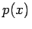
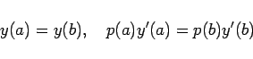

Inhalt Index DeskTop Bronstein

 Differentialgleichungen Gewöhnliche Differentialgleichungen Randwertprobleme Entwicklung nach Eigenfunktionen
Differentialgleichungen Gewöhnliche Differentialgleichungen Randwertprobleme Entwicklung nach Eigenfunktionen


Randwertprobleme des betrachteten Typs treten bei Anwendungen der FOURIERschen Methode zur Lösung von Aufgaben der theoretischen Physik häufig auf, aber mit dem Unterschied, daß in den Endpunkten des Intervalls [a,b] Singularitäten der Differentialgleichungen vorkommen können, z.B. das Verschwinden von . In solchen singulären Punkten werden den Lösungen gewisse Einschränkungen auferlegt wie z.B. Stetigkeit oder Endlichkeit oder unbeschränktes Wachstum nicht höher als von einer bestimmten Ordnung. Solche Bedingungen spielen die Rolle von homogenen Randbedingungen. Außerdem tritt der Fall auf, daß bei einigen Randwertproblemen homogene Randbedingungen zu untersuchen sind, die die Werte der Funktion und ihrer Ableitung in entgegengesetzten Endpunkten des Intervalls miteinander verknüpfen. Häufig sind dabei die Bedingungen
|  | (9.67) |
vertreten, die im Falle p(a) = p(b) Periodizitätsbedingungen darstellen. Für Randwertprobleme mit diesen Bedingungen gilt alles, was oben ausgeführt wurde, ausgenommen die Behauptung (9.65b). Ausführliche Darstellungen der Problematik s. Lit. 9.5.